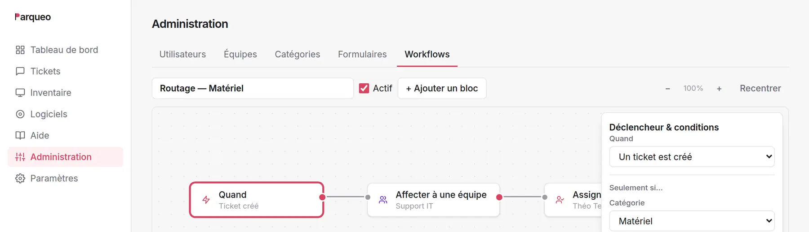
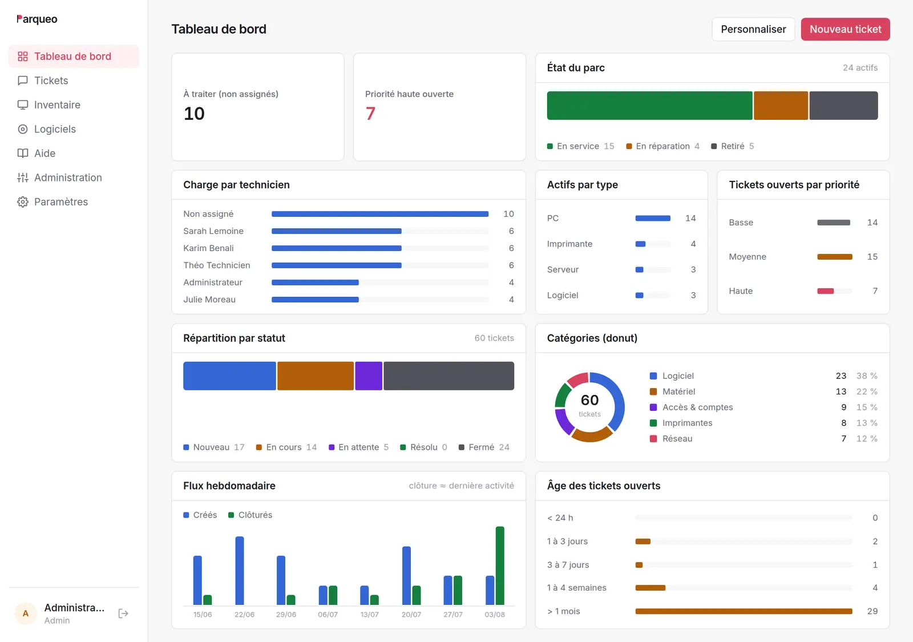
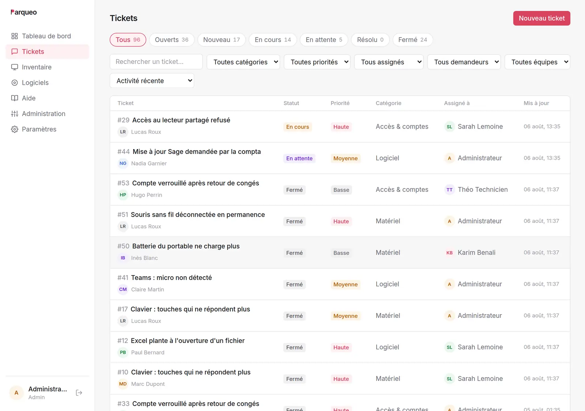
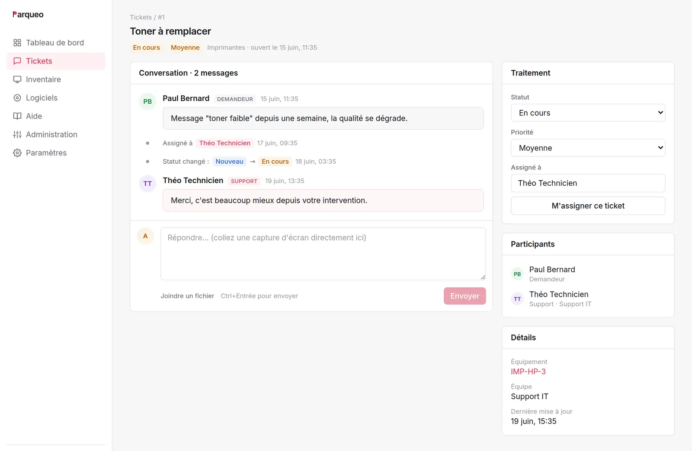
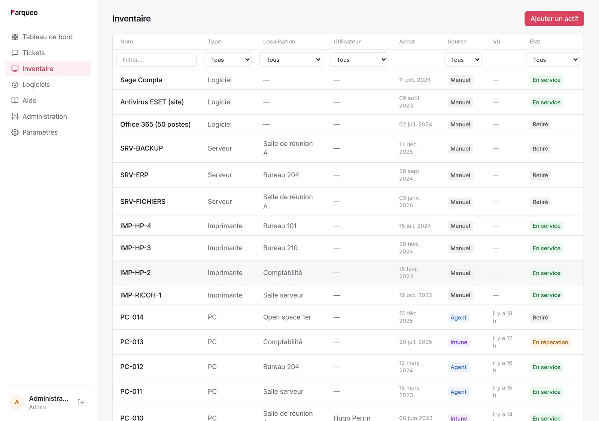

L'utilisateur fait sa demande
Trois portes d'entrée — catalogue de formulaires, ticket libre ou email — et la base de connaissances propose déjà une réponse avant de valider.
Logiciel ITSM auto-hébergé · tickets, parc, automatisation
Parqueo réunit le ticketing, l'inventaire du parc et l'automatisation des procédures dans une interface comprise sans formation. Vous dessinez vos procédures une fois ; l'application les applique.
Installé sur vos serveurs · Node.js, PostgreSQL, React · Vos données restent chez vous.
Le parcours d'un ticket
Trois portes d'entrée — catalogue de formulaires, ticket libre ou email — et la base de connaissances propose déjà une réponse avant de valider.
Affectation à la bonne équipe, priorité ajustée, accusé de réception envoyé — puis le ticket patiente jusqu'à sa prise en charge.
Fil de discussion, pièces jointes, journal horodaté et matériel rattaché : l'historique de l'équipement se construit tout seul.
Enquête de satisfaction en un clic, puis clôture automatique du ticket résolu après le délai que vous fixez.
Workflows
Un déclencheur, puis des blocs qui agissent (affecter, notifier, changer la priorité) ou attendent : le ticket se gare et ne repart qu'une fois la condition remplie.
Déclencheurs
Un ticket créé ou dont le statut change, filtré par catégorie, formulaire ou priorité — un workflow par procédure, pas un fourre-tout.
Actions
Affecter, ajuster la priorité ou le statut, poster une note, envoyer un email, appeler un webhook.
Attentes & conditions
L'attente retient le ticket jusqu'à sa prise en charge ; la condition ouvre deux chemins, l'urgence d'un côté, le traitement normal de l'autre.

Le bloc webhook ouvre la porte au reste de votre SI. Branchez n8n, Zapier ou vos scripts : Parqueo envoie le ticket, votre automatisation fait le reste.
Fonctionnalités
Chaque module s'active et se règle depuis l'administration — vos équipes n'ont que ce dont elles se servent.
Formulaires sur mesure (texte, listes, dates, cases), chacun avec sa catégorie, sa priorité et son propre workflow.
Des articles courts, suggérés pendant la saisie de la demande et rédigés par vos techniciens eux-mêmes.
Postes, imprimantes, serveurs et logiciels, avec l'état, le détenteur et l'historique des tickets par équipement.
Une boîte IMAP surveillée : chaque email devient un ticket, chaque réponse un commentaire. Le portail devient optionnel.
Authentification unique OpenID Connect, restriction par domaine, comptes locaux en secours. Aucun mot de passe à distribuer.
Utilisateur, technicien, administrateur : chacun ne voit que ses demandes, la file de son équipe ou tout le service.
L'administrateur compose l'écran d'accueil de chaque rôle en posant des widgets sur une grille : chiffres clés, répartition par statut, charge par technicien, état du parc. Treize widgets, et chacun peut réarranger le sien.
L'application
Pas de maquette : quatre écrans de Parqueo tel qu'il tourne. Une interface dense là où il faut trancher vite — la file de tickets, l'inventaire — et sobre partout ailleurs.




Hébergement & données
Une API Node.js, une base PostgreSQL, une interface React. En auto-hébergé, tout tourne sur votre infrastructure : rien n'est envoyé chez un éditeur, rien n'a besoin d'être ouvert sur l'extérieur — de quoi simplifier autant la conformité RGPD que les audits internes. En SaaS, nous hébergeons et infogérons l'ensemble pour vous.
Ce qui se passe ensuite
Quelques lignes sur votre parc, vos effectifs et les procédures qui vous coûtent le plus de temps.
L'application en fonctionnement, sur un jeu de données proche du vôtre : tickets, parc, workflows.
Installation sur votre infrastructure ou sur notre hébergement, reprise de l'inventaire, création des catégories et des équipes.
On dessine ensemble les premières procédures — celles que votre service répète chaque semaine.
Offres
Installez Parqueo sur votre propre serveur et gardez la main sur tout, ou laissez-nous l'héberger et l'infogérer pour n'avoir qu'à l'utiliser. Le logiciel est le même dans les deux cas — c'est la gestion de l'infrastructure qui change.
Auto-hébergé
Vous installez Parqueo sur votre serveur ou celui de votre hébergeur. Vos données ne quittent jamais votre infrastructure.
SaaS infogéré
On héberge Parqueo, on l'installe, on le met à jour et on le sauvegarde. Vous vous concentrez sur vos tickets, pas sur les serveurs.
Tarif dégressif selon la taille de l'équipe — les demandeurs (vos utilisateurs) restent illimités et gratuits dans tous les cas.
| Techniciens | SaaS / technicien / mois | Auto-hébergé / technicien / an |
|---|---|---|
| 1 à 3 | 19 € | 149 € |
| 4 à 10 | 16 € | 129 € |
| 11 et plus | sur devis | sur devis |
Questions fréquentes
Prendre contact
Décrivez votre service en quelques lignes — nombre de postes, taille de l'équipe, ce qui vous fait perdre du temps aujourd'hui. Vous recevrez une réponse avec une proposition de date pour la démonstration.
Demander une démonstrationLe bouton n'ouvre rien ? Copiez l'adresse et écrivez-nous depuis votre messagerie habituelle.